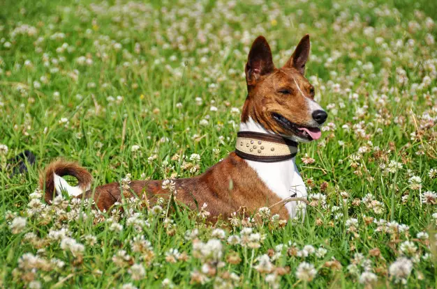

Basenji

Introdução
O basenji é um cãozinho independente e afetuoso, que é chamado por muitos de “cão-mudo”, pois não costuma latir nem fazer barulhos muito altos.
Esses cães representam uma das raças mais primitivas e uma das poucas que foram originadas na África Central, tendo como país de origem locais como a República Democrática do Congo.
Dados importantes sobre a raça
Origem: África Central;
Peso: 9 kg a 12 kg;
Altura: 35 a 42 cm de altura média;
Expectativa de vida: Em média de 13 a 15 anos.
História
O basenji é uma das raças de cães mais primitivas que existem e seu surgimento se deu na África Central, em territórios que hoje fazem parte de países como a República Democrática do Congo e a África do Sul. Há registros de pinturas em pirâmides e tumbas egípcias de mais de 5 mil anos de idade, que registram animais com porte, cores e estruturas similares aos do atual Basenji.
Seu nome pode ser traduzido como “camponês” ou “cão dos selvagens” e ele era muito utilizado por tribos como os Azande e os Mangbetu, que costumavam usar os basenji como cão de guarda, avisando sobre a presença de animais estranhos durante a noite.
Foi apenas no século XIX que os cães basenji saíram da África Central para conquistar todo o mundo, fazendo parte de rankings dos cães mais populares em países como os Estados Unidos.
Características
O basenji é um cão pequeno, com porte esbelto e pelos curtos, cujas orelhas estão sempre em pé e atentas a todos os barulhos. O rabo dos basenji é geralmente encurvado, e costuma ficar enrolado em cima de suas costas. Quando os basenji correm, o rabo costuma ficar totalmente esticado, para permitir que eles tenham um balanço melhor e mais equilíbrio.
Cores
O basenji geralmente é composto pela combinação de uma cor e de partes brancas, sendo que as patas, o peito e a ponta do rabo desse cão são sempre brancos.
Suas cores variadas podem ser o preto ou o caramelo (que puxa para tons mais avermelhados), que se mesclam em diferentes pontos do corpo do basenji, formando padrões únicos.
Alguns basenjis podem ainda ser tricolores, com tons como preto, caramelo e branco presentes em pontos diferentes do corpo.
Temperamento
O basenji é um cão cheio de energia, alerta e muito inteligente. Ele costuma se apegar a um de seus donos, desenvolvendo um vínculo alegre e afetuoso.
O basenji é considerado um cão independente porque não gosta muito de seguir comandos. Costuma ser uma tarefa complicada treinar os cães dessa raça, que podem precisar de muitas brincadeiras que exercitem seu intelecto e que sejam estimulantes para o animal.
Os cães ancestrais do basenji eram muito usados também como suporte na caça, por isso, ele pode ter um senso aguçado para caçar outros animais e insetos.
Esses cães são curiosos e podem ficar tanto em apartamentos, quanto em casas com quintal. No entanto, é preciso garantir que ele possa fazer caminhadas e brincadeiras que o ajudem a gastar parte de seu estoque ilimitado de energia.
Em alguns pontos eles são muito parecidos com os gatos. O basenji, por exemplo, detesta o tempo úmido e não gosta de se molhar. Se estiver chovendo, ele provavelmente não vai querer passear na chuva. Para se manter limpo, ele mesmo costuma lamber seu pelo, o que o ajuda a manter-se limpo e higienizado. Ele também gosta de subir em locais altos, para observar todo o ambiente.
O basenji com crianças, estranhos e outros animais
O basenji pode ser um bom cão com crianças mais velhas, que gostem de brincar com animais. Com crianças mais novas, por ter um alto nível de energia, o basenji pode ser um pouco bruto e estabanado. Ele precisa ser treinado para entender como lidar com os pequenos.
Vale frisar que o basenji é um animal independente. Se a criança não souber respeitá-lo ou tratá-lo adequadamente, ele pode reagir mal.
Estranhos geralmente não se dão bem com o basenji, que é considerado um cão de guarda porque está sempre em alerta e costuma avisar seu dono sobre movimentações suspeitas. Ao receber amigos e visitas, pode ser preciso treinar o basenji para que ele não os veja como uma ameaça.
O basenji tem um comportamento de caça muito forte. Por isso, pode ser que ele não se dê muito bem com gatos ou outros animais. Para evitar que ele ataque outros animais, é preciso adestrá-lo e socializá-lo desde cedo, permitindo que o basenji entenda que eles não são uma caça ou algo a ser atacado.
O basenji late muito?
Não, o basenji não late. Isso porque ele não consegue emitir latidos. No entanto, o basenji não é um cão completamente mudo. Ele consegue emitir alguns ruídos com a garganta, que podem parecer como suspiros e grunhidos e que acabam por servir como um método de comunicação entre o cão e seu dono.
O basenji é destruidor?
Sim, o basenji pode ser bastante destruidor. Esse é um cão inteligente e naturalmente curioso, por isso, se deixado sozinho por longos períodos de tempo e tiver a oportunidade, ele pode comer e destruir objetos diversos. O basenji também adora cavar buracos em jardins e vasos de plantas.
Para evitar que isso aconteça, é preciso treinar o cão desde filhote e estimulá-lo por meio de brincadeiras e caminhadas, ajudando-o a gastar sua grande quantidade de energia.
O basenji é agitado?
Sim. O basenji é um cão de grande porte e cheio de energia. Ele pode correr muito em linha reta, mas costuma fazer movimentos mais lentos, devido ao seu grande tamanho.
Cuidados
Escovação
O basenji quase não perde pelo, além de seus pelos serem bem curtos e colados ao corpo. Por isso, a sua escovação frequente não é tão necessária como em outras raças de cachorro.
Alimentação
A alimentação do basenji deve ser bem equilibrada e balanceada, seguindo as recomendações do médico veterinário. Essa não é uma raça com tendências para ganhar peso.
Banho
O basenji costuma se lamber durante várias vezes ao dia, como um gato. Isso não elimina os banhos por completo, mas pode deixá-los mais espaçados, afinal, o basenji não cheira mal.
Saúde
O basenji pode sofrer de dermatites diversas, por conta do seu pelo curto e fino, que não consegue proteger muito bem sua delicada pele. Esses cães têm uma maior propensão à cegueira e ao hipotireoidismo.
Outros problemas recorrentes do basenji estão relacionados à sua bexiga e aos rins, por conta da Síndrome de Fanconi. Ele pode sofrer de infecções urinárias e de incontinência, perdendo a capacidade de controlar seu xixi.
O basenji também pode ser infértil e as fêmeas basenji podem sofrer de piometra, um tipo de infecção no útero. Curiosamente, as fêmeas basenji têm apenas um cio por ano.
Nível de exercício
O basenji precisa ser muito estimulado com exercício. Essa raça requer pelo menos duas horas de atividades por dia, que podem englobar caminhadas e brincadeiras estimulantes. O basenji precisa ser intelectualmente estimulado e esse cão pode, inclusive, aprender a brincar sozinho e gostar dessa experiência, desde que tenha brinquedos adequados e que podem ser utilizados sem supervisão.
Preço
O preço do basenji varia entre R$ 1.500 e R$ 3.500, usando como referência valores de sites especializados na venda de filhotes e de cães de raça.
Antes de tomar a decisão definitiva de comprar um basenji e acrescentá-lo à família, dê uma olhada nos canis de organizações de acolhimento animal, que possuem inúmeros cães e animais esperando para serem adotados por uma família amorosa. Descubra aqui mais informações sobre adoção de cachorro.